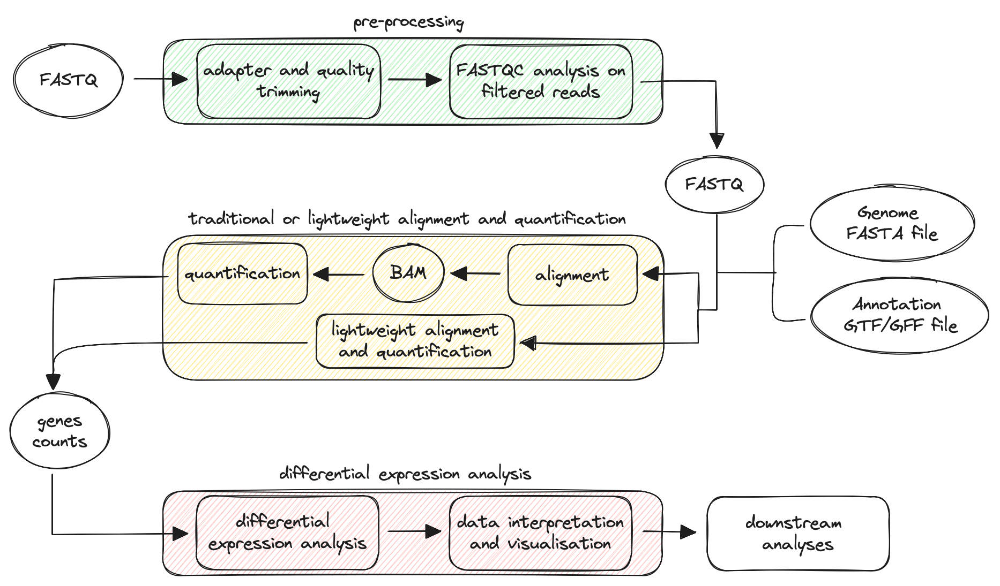

RNAseq Analysis¶
Before we dive into the nf-core pipeline for analysing RNA-sequencing data, it's worth looking at some theoretical aspects of RNA-seq.
Overview¶
Given the central role of RNA in a wide range of cellular and molecular functions, RNA-seq has emerged as a powerful tool for measuring the presence and levels of RNA species in biological samples. The technique is based on next-generation sequencing (NGS) technologies and is now considered the gold standard in the field of transcriptomics.
After RNA extraction and reverse transcription into complementary DNA (cDNA), the biological material is sequenced, generating NGS "reads" that correspond to the RNA captured in a specific cell, tissue, or organ at a given time. The sequencing data is then bioinformatically processed through a typical workflow summarised in the diagram below:

In the scheme, we can identify three key phases in the workflow: data pre-processing, alignment and quantification, and differential expression analysis. In the data pre-processing step, the raw reads are processed to remove adapters and contaminants, and their quality is checked. Then, reads are mapped to a reference genome, and gene abundance is estimated. The workflow can also follow an alternative route based on lightweight alignment and quantification, reducing the time required for analysis. Finally, differentially expressed genes are identified using statistical tests, annotated, and visualised.
Depending on the user's needs, the workflow can include additional downstream analyses such as functional enrichment analysis, co-expression analysis, and integration with other omics data.
Pre-processing¶
The pre-processing of sequencing reads from RNA-seq data is a critical step to ensure the quality and accuracy of downstream analysis. The raw reads obtained from the sequencer are stored as FASTQ files, which contain both the sequence data and quality scores. The initial processing step involves evaluating the quality of the reads and identifying potential issues such as adapter contamination, sequencing errors, or low-quality bases. The presence of adapters (short DNA sequences ligated to the ends of DNA fragments during library preparation) is detected through comparison with known adapter sequences or by using algorithms that identify adapter-like sequences, and removed in a process known as read trimming. Next, reads containing contaminants (genomic DNA and/or rRNA) and those with low-quality bases are filtered out. Finally, the quality of the filtered reads is checked again to ensure their suitability for downstream processing.
Alignment (or lightweight alignment) and quantification¶
In the RNA-seq workflow, the alignment step involves mapping sequencing reads to a reference genome or transcriptome to determine the position and orientation of each read relative to the reference sequence.
Errors, gaps, regions of poor sequence quality, insertions/deletions (INDELs), as well as duplicated and repetitive regions in the reference sequence, make this step challenging. Addressing these issues by choosing a high-quality reference and an appropriate aligner is essential for accurate results. A crucial component in the alignment step is the annotation file, which can be in General Feature Format (GFF) or Gene Transfer Format (GTF). These files contain key information about the location and structure of genes and transcripts, playing a crucial role in accurate mapping and gene expression quantification. Additionally, RNA-seq data often includes reads that span exon-exon junctions, and the annotation files provide information about splice junctions, allowing for the detection of different isoforms.
The alignment and quantification steps can follow two different approaches depending on user preferences: - traditional alignment and quantification; - lightweight alignment and quantification.
In RNA-seq analysis, traditional alignment is often performed with splice-aware aligners, which are designed to recognise the splicing process. These aligners can align reads across known splice junctions and detect novel splice sites or alternative splicing events. They use advanced algorithms and optimisation techniques, like reference genome indexing and parallel processing, to achieve accurate and fast alignment. Popular splice-aware aligners include STAR and HISAT2. Once alignment is complete, the next step is quantification, which involves estimating the abundance (number of reads) associated with each gene. Tools like featureCounts, HTSeq, Salmon, and RSEM are commonly used for this purpose.
Traditional alignment tools are time-consuming and require substantial computational resources, particularly in terms of memory and CPU usage. Alternatively, the method known as lightweight alignment allows for faster analysis by determining the likely origin of reads without a full, base-by-base alignment. This method is sometimes referred to as quasi-mapping. Lightweight alignment tools like Kallisto, Sailfish, and Salmon avoid full-scale alignment, providing quantification estimates more quickly than traditional splice-aware algorithms, while still maintaining high accuracy. The quantification results from these tools are often called pseudocounts or abundance estimates, which can be used for downstream analysis.
Differential expression (DE) analysis with DESeq2¶
Differential expression analysis is a statistical method for comparing gene expression levels between different experimental conditions, such as disease vs healthy (e.g., tumour tissue vs healthy tissue), treatment vs control (e.g., a sample treated with a specific stimulus, drug, or compound vs an untreated sample), and tissue vs tissue (e.g., brain vs heart). Differential expression analysis aims to assess, for each gene, whether the observed differences in expression between groups are statistically significant, accounting for the variation observed within groups (replicates). This part of the analysis is typically performed in R using various packages that have been developed, such as DESeq2, edgeR, and limma. This tutorial focuses on DESeq2, a popular R package known for its robustness. For more detailed information, see the DESeq2 vignette. A typical workflow is outlined in the flowchart below:
Quality Control¶
To ensure robust differential expression results, it is common to start by exploring the sources of variation in the data. DESeq2 provides quality control tools, including Principal Component Analysis (PCA) and hierarchical clustering. PCA is used to reduce the dimensionality of the data, allowing the visualisation of the samples in a lower-dimensional space. In contrast, hierarchical clustering shows the correlation of gene expression for all pairwise combinations of samples in the dataset. These methods can identify groups of samples with similar behaviour, as well as potential outliers or unexpected patterns.
Quality control in DESeq2 typically uses variance-stabilised (vst) or regularised log-transformed (rlog) counts. Since raw counts in RNA-seq follow a discrete distribution, which is not suitable for many statistical and machine learning algorithms that assume continuous distributions, transformations such as vst and rlog are applied to stabilise the variance across genes. This stabilisation ensures that, after transformation, genes with both low and high expression levels have variances that are more comparable, making the data more suitable for downstream analyses.
Finally, it is often beneficial to filter out genes that are unlikely to show differential expression, such as those with zero counts across samples or extreme count outliers. By filtering out these genes, we can increase the sensitivity of our differential expression analysis and reduce the risk of false positives.
Note
The vst or rlog transformations are applied to the normalised counts stored in the dds object, which is generated by running either the DESeq() or estimateSizeFactors() function. Since the estimation of size factors is an early step in the DESeq() function, the transformations are applied immediately afterwards.
Design Formula¶
The design formula specifies the sources of variation that the statistical model needs to account for. It defines how the counts will be related to the experimental conditions, allowing the software to model the relationship between gene expression and the factors of interest, such as treatment, time points, or batch effects. It is important to specify the main factor of interest as well as additional covariates in the design formula.
A well-defined design formula can account for potential confounding variables. For instance, if the experiment includes multiple conditions or batches, specifying these in the design helps to isolate the effect of the primary variable of interest on gene expression. An example is provided below:
# Basic design with a single factor of interest
design = ~ condition
# Design including covariates to control for sex and developmental stage
design = ~ sex + developmental_stage + condition
In R, the tilde (~) is used in formula syntax to specify relationships between variables in statistical models. Here, it indicates that gene counts (dependent variable) will be modelled as a function of the variables specified (predictors).
Note
The results will not be affected by the order of variables, but the common practice is to specify the main source of variation in the last position of the design formula.
Differential Expression Analysis¶
RNA-seq data typically contain a large number of genes with low expression counts, indicating that many genes are expressed at very low levels across samples. At the same time, RNA-seq data exhibit a skewed distribution with a long right tail due to the absence of an upper limit for gene expression levels. This means that while most genes have low to moderate expression levels, a small number are expressed at high levels. Accurate statistical modelling must therefore account for this distribution to avoid misleading conclusions.

The analysis begins with the input data, which generally consist of a matrix obtained during the alignment and quantification step, summarising the expression levels of the different genes in each sample of the dataset. The rows of the matrix typically correspond to genes, and the columns represent the samples. Another essential prerequisite is a metadata table describing the samples.
The core of the differential expression analysis is the DESeq() function, a wrapper that streamlines several key steps into a single command. The different functions are listed below:
Note
While DESeq() combines these steps, a user could choose to perform each function separately to have more control over the whole process.
The different steps are explained in detail below:
1) Normalisation: since DESeq2 compares counts between sample groups for the same gene, it does not need to adjust for gene length. However, it is essential to account for variations in sequencing depth and RNA composition among samples. To normalise the data, DESeq2 utilises size factors, which correct for these variations in library sizes and RNA composition.
The size factors are calculated using the median ratio method:
- Calculate the geometric mean: For each gene, compute the geometric mean of its counts across all samples. This gives a row-wise geometric mean for each gene;
- Calculate ratios: Divide each gene's count by its geometric mean to obtain a ratio for each sample;
- Determine size factors: For each sample, take the median of these ratios (column-wise) to derive the size factors;
- Normalise counts: Divide each raw count by the corresponding sample size factor to generate normalised counts.
The median ratio method assumes that not all genes are differentially expressed, so large outlier genes will not negatively influence the size factors. This approach is robust to imbalances in up-/down-regulation and can handle large numbers of differentially expressed genes.
Note
While normalised counts are useful for downstream visualisation of results, they should not be used as input for DESeq2. Instead, DESeq2 requires count data in the form of a matrix of integer values.
2) Estimate dispersion and gene-wise dispersion: the dispersion is a measure of how much the variance deviates from the mean. The estimation of dispersion is essential to model the variance of the count data. Importantly, RNA-seq data are characterised by overdispersion, where the variance in gene expression levels often exceeds the mean (variance > mean).
DESeq2 addresses this issue by employing the negative binomial distribution, which generalises the Poisson distribution by introducing an additional dispersion parameter. This parameter quantifies the extra variability present in RNA-seq data, providing a more realistic representation than the Poisson distribution, which assumes equal mean and variance. DESeq2 starts by estimating the common dispersion, a single estimate of dispersion applicable to all genes in the dataset. This estimate provides a baseline for variability across all genes in the dataset. Next, DESeq2 estimates gene-wise dispersion, a separate estimate of dispersion for each individual gene, taking into account that different genes may exhibit varying levels of expression variability due to biological differences. The dispersion parameter (α) is related to the mean (μ) and variance of the data, as described by the equation:
Var = μ + α ⋅ μ²
A key feature of DESeq2's dispersion estimates is their negative correlation with the mean and positive correlation with variance. Genes with low expression have higher dispersion values, while genes with high expression tend to have lower dispersion. Additionally, genes sharing similar mean expression levels can exhibit different dispersion estimates based on their variance. To improve the accuracy of dispersion estimates, DESeq2 assumes that genes with similar expression profiles share similar dispersion patterns and leverages this information to refine the estimates.
-
Mean-dispersion relationship: this process, known as dispersion fitting, models the relationship between the mean expression level of a gene and its dispersion. In this process, DESeq2 identifies a trend in the dispersion estimates across genes. The fitted curve, typically a smooth curve, describes how dispersion changes as a function of the mean expression level.
-
Final dispersion estimates: DESeq2 refines the gene-wise dispersion by shrinking it towards the fitted curve. The "shrinkage" helps control for overfitting, particularly in genes with low counts or few replicates, and makes the dispersion estimates more reliable. However, genes with exceptionally high dispersion values are not shrunk because they likely deviate from the modelling assumptions, exhibiting elevated variability due to biological or technical factors. Shrinking these values could lead to false positives.
3) Fitting model and testing: the initial step in hypothesis testing involves defining a null hypothesis for each gene. Here, the null hypothesis states that there is no difference in expression between the two sample groups (LFC == 0). Next, DESeq applies a statistical test to assess whether the null hypothesis is true. DESeq2 fits a generalised linear model (GLM) to the normalised counts using the calculated size factors and final dispersion estimates. A GLM is a flexible extension of linear regression that models the relationship between a response variable (normalised counts) and predictors (e.g., condition). A GLM is used because it provides flexibility in modelling RNA-seq data, which has unique characteristics, such as discrete counts and overdispersion (variance exceeding the mean). By using a negative binomial distribution, DESeq2's GLM can handle the additional variability in gene expression counts that often occurs in RNA-seq data. Once the model is fit, coefficients are estimated for each sample group along with their standard errors. These coefficients represent the estimated log2 fold changes between groups and serve as the basis for hypothesis testing, using either a Wald test or a Likelihood Ratio Test (LRT), depending on the experimental design:
-
Wald Test: The Wald test is ideal for simpler experimental designs, such as comparing two conditions (e.g., treated vs untreated). It tests whether the estimated effect size (log2 fold change) of a predictor variable (like treatment) is significantly different from zero. This test provides direct estimates of fold changes with associated p-values, making it computationally efficient for straightforward comparisons.
-
Likelihood Ratio Test (LRT): The LRT is more suitable for complex experimental designs involving multiple variables (e.g., time points, treatments and batches). It compares the fit of two nested models: one with the factor of interest (e.g., treatment) and one without it to assess whether including that factor significantly improves model fit. This approach allows DESeq2 to account for confounding variables and to isolate the effect of specific variables on gene expression, offering flexibility for multi-factor analyses.
When performing multiple tests, such as in the case of RNA-seq data where thousands of genes are tested, the risk of false positives increases. To account for this, DESeq2 employs multiple test correction methods (the Benjamini-Hochberg procedure is the default) to adjust the p-values and control the false discovery rate (FDR). The FDR is the expected proportion of false positives among the identified significant results.
Note
For example, by setting the FDR cutoff to < 0.05, 5% of genes identified as differentially expressed are expected to be false positives. For instance, if 400 genes are identified as differentially expressed with an FDR cutoff of 0.05, you would expect 20 of them to be false positives.
After identifying DE genes using DESeq2, it is essential to interpret the biological significance of these genes through functional analysis. This involves examining the roles of the differentially expressed genes in various biological processes, molecular functions, and pathways, providing insights into the underlying mechanisms driving the observed changes in gene expression. This interpretation can help in discovering pathways involved in disease or identifying potential therapeutic targets. Different tools are available to carry out these functional analyses, such as Gene Ontology, Reactome, KEGG, clusterProfiler, g:Profiler, and WikiPathways.